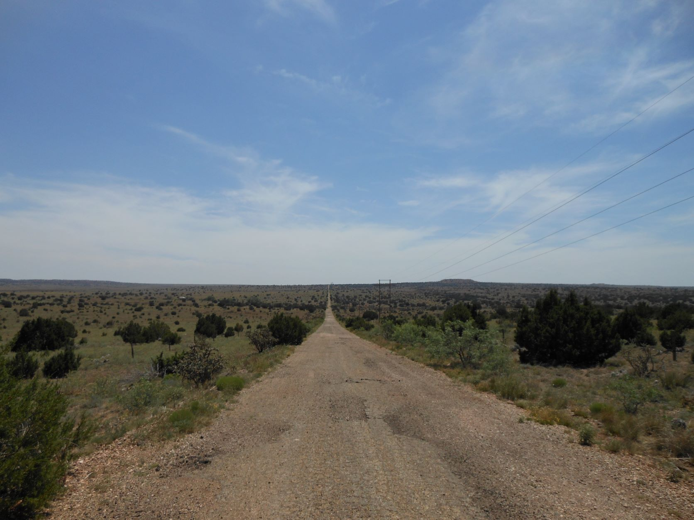
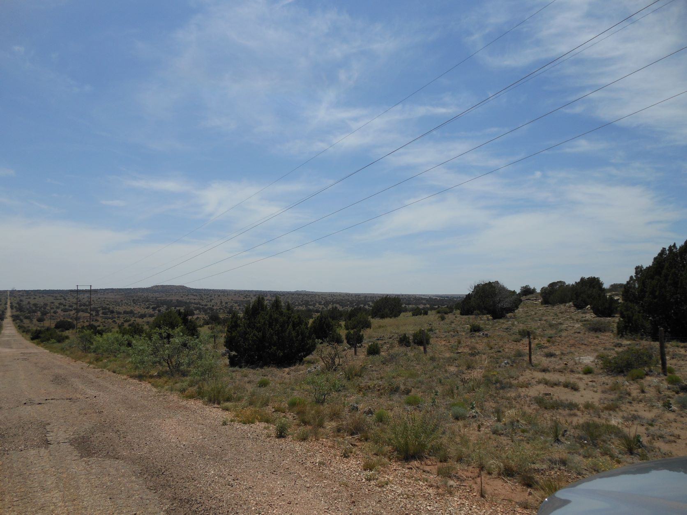
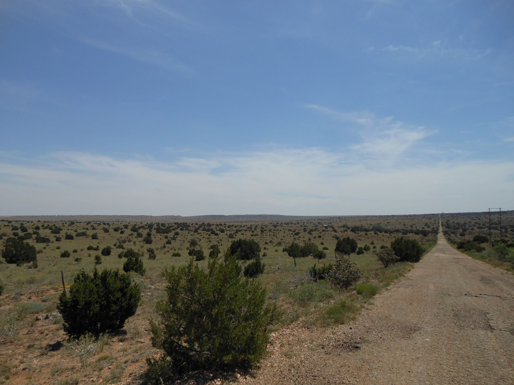
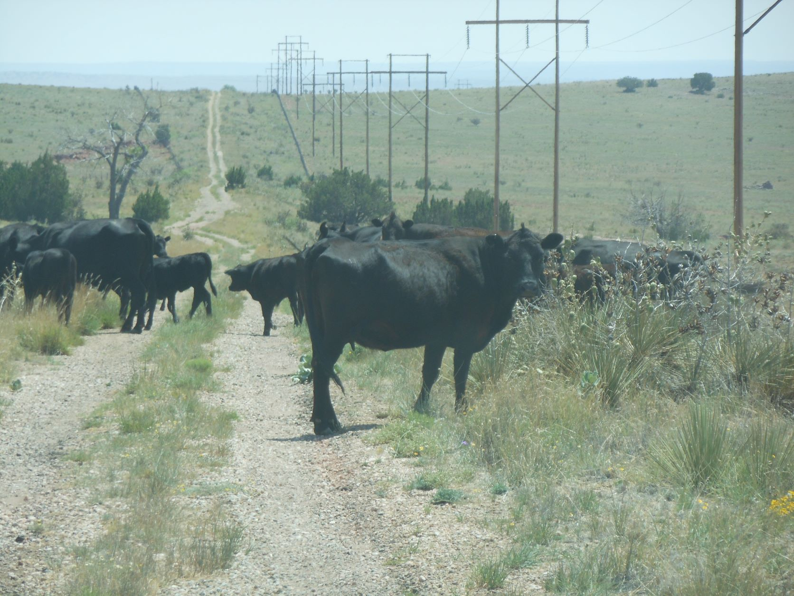
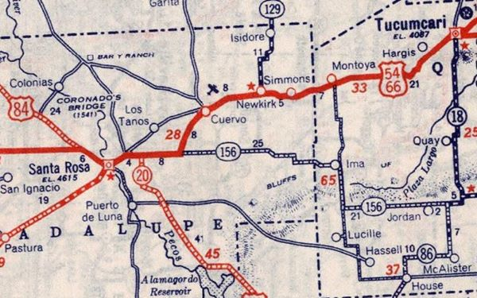

June 13, 2012 - Cuervo Cutoff, NM
From the 1930s to the 1950s - Route 66 turned Southwest from Cuervo, NM toward NM 156, then West on NM 156 to Santa Rosa, NM.
Just as interesting and beautiful and laden with history as any other part of the Mother Road.

The Event Horizon - Cuervo Cutoff - Route 66, NM

Desert prairie - Cuervo Cutoff - Route 66, NM

Desert prairie - Cuervo Cutoff - Route 66, NM

Black Angus cattle - Cuervo Cutoff - Route 66, NM

1939 Map showing the Cuervo Cutoff - Route 66, NM